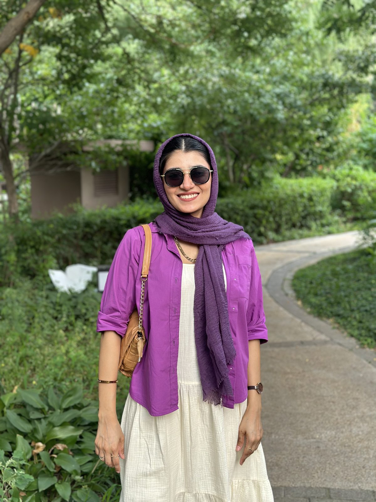
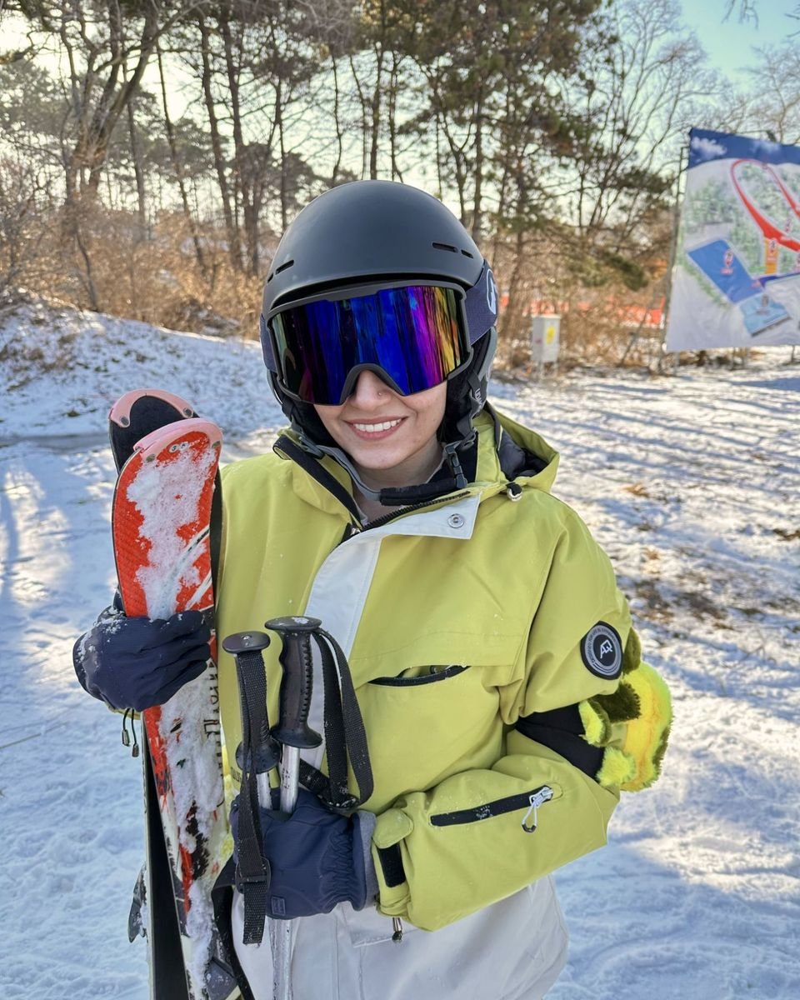
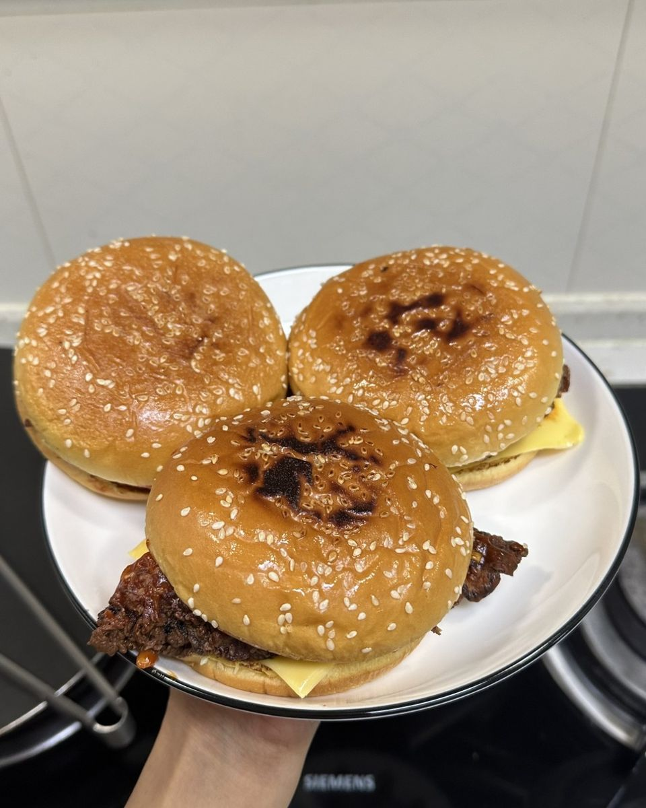
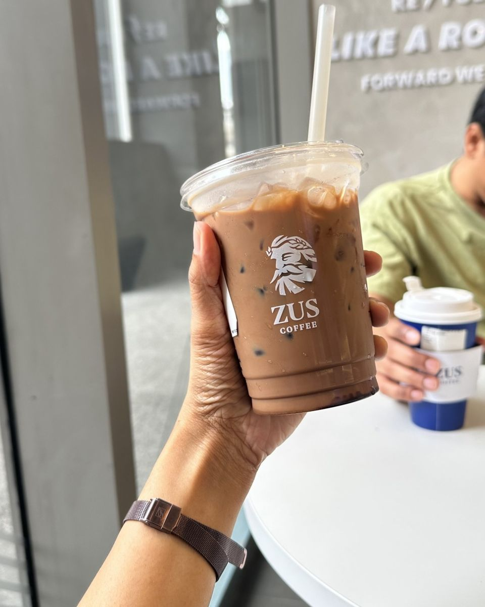

About me
Hi! I’m Fatima, a UX/UI designer based in Debrecen, Hungary, currently working remotely as a Product & Brand Designer.
I spent five years as a dentist. When I moved to China, I couldn’t practise straight away, so I used that pause to try something new: I took a UX/UI design course and started building my portfolio from scratch.
It clicked quickly. Dentistry had already taught me the core of UX: listen first, notice where people struggle, and design for their comfort, not just the fix.
Since then I’ve designed websites and products for teams and clients, earned the Google UX Design Certificate and settled in Debrecen. I’m open to remote and EU-based roles, and I’d love to bring that people-first eye to your team.

How I work
-
People first
I start with research and real user problems, not assumptions.
-
Clarity over decoration
Simple structure, clear wording and calm visuals that help people act with confidence.
-
Ready to build
Organised Figma files, design systems and handoff notes that developers can actually use.
Beyond the screen
When I’m not in Figma, I’m exploring new places, trying new recipes for my husband or sipping coffee. Currently learning German too!


